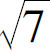
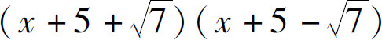
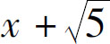
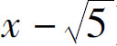
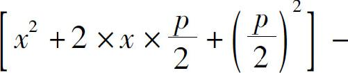
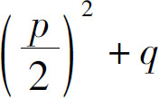
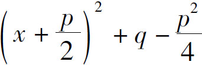
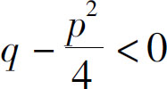
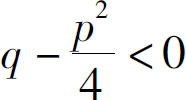

在前文中，我们介绍了因式分解的常用办法——十字相乘法．十字相乘法是分解二次三项式的一种常用办法，最后我们发现，虽然这种办法很方便，但好像并不能解决所有问题，那么有没有二次三项式通用分解方法呢？还真有，这就是本节要介绍的配方法．
配方法就是强行把一个二次三项式配成完全平方公式，无论它是不是完全平方公式，我们都强制把二次项和一次项拼在一起配成平方公式，因为我们是强配的，所以肯定会凭空增加或遗漏一些内容，最后我们再把多增加出来的东西减下去或者把遗漏的东西补充上．
比如：4x 2 ＋12x －7．在这个二次三项式中，4x 2 ＝（2x ）2 ，12x ＝2×（2x ）×3，如果它们能凑成一个完全平方公式，常数项必须等于3的平方，即等于9．但很可惜，常数项是－7，那怎么办？缺少9，我们就在原式中强加一个9，然后在配完平方以后减去它．接下来我们就按照这个思路处理一下．
4x 2 ＋12x －7（强制配上32 ，然后再减去它）
＝［（2x ）2 ＋2×（2x ）×3＋32 ］－32 －7（转为完全平方公式并化简）
＝（2x ＋3）2 －16（后者可以视为42 ）
＝（2x ＋3）2 －42 （符合平方差公式，继续分解）
＝（2x ＋3＋4）（2x ＋3－4）
＝（2x ＋7）（2x －1）
配方法是二次三项式的通用解决方法，当我们处理这类问题的时候，有三个步骤：第一步，处理二次项系数，如果二次项系数是负的，可以对整个多项式提取负号，把它变成正的，确定是正的以后，求出二次项系数的算术平方根．第二步，处理一次项系数，首先让一次项系数除以2，然后再除以刚才求解的算术平方根，最后得到的商，平方后就得到了我们要补的常数项．第三步，在多项式中增加这个常数项，完成配方后，再减去它．当然，在二次三项式中，有可能含有两个变量，对于两个变量的情况，我们只需要处理一个变量的平方项的系数，另一个变量可以当作常数项来看待．
接下来，我们看下面的问题：－9x 2 ＋24x y －15y 2 ．在这个题目中存在两个变量的平方项，而且都是负的，其中x 2 的系数9是一个平方数，所以我们就取x 当作二次项，把y 看成常数项，先把负号提取出去，原式变为－（9x 2 －24x y ＋15y 2 ），我们继续把9开平方得到3，于是我们就得到了第一个系数．然后我们再处理一次项24x y ，它的系数是24，我们把它除以2，得到12，再除以刚才得到的算术平方根3，得到4，最后把4平方以后得到16，因为我们把y 看成了常数项，所以我们应该增加的是16y 2 ，然后我们再减去一个16y 2 即可．按此思路可得：
－9x 2 ＋24x y －15y 2
＝－［（3x ）2 －2×3x ×4y ＋（4y ）2 －（4y ）2 ＋15y 2 ］
＝－［（3x －4y ）2 －y 2 ］
＝－（3x －4y ＋y ）（3x －4y －y ）
＝－（3x －3y ）（3x －5y ）
＝3（y －x ）（3x －5y ）
接下来，我们处理一下前面的遗留问题：x 2 ＋10x ＋18．这个多项式中二次项系数是1，一次项系数是10，10÷2＝5，所以，我们就可以给前面两个算式配上5的平方，然后再减去它，过程如下：
x 2 ＋10x ＋18
＝（x 2 ＋2×x ×5＋52 ）－52 ＋18
＝（x ＋5）2 －7
处理到这一步我们发现，我们凑不成平方差公式了，因为7开平方得不到一个整数，但是我们不要忘了7是

的平方，所以结果就是
．说实话，如果结果不是这么别扭的话，我们就不需要用配方法去解决它了！
上文提到，配方法是解决二次三项式的最通用的办法．截至目前，是不是所有二次三项式的问题都解决了呢？接下来就让我们分类讨论，先看一下相对简单的二次两项式的情况．
如果我们在二次项后面增加个一次项，就变成了a x 2 ＋b x 的形式，在这种情况下，我们只要把变量x 提取公因式，因式分解就完成了．但如果我们给二次项增加一个常数项呢？比如x 2 －5，套用平方差公式，把常数项加个根号开方就可以了，结果是（

）·（
）．不过这时候我们就要注意了，必须是二次项减去一个数才能凑成平方差公式，如果是加一个数（比如x 2 ＋5），还能因式分解吗？不能！这其实就是二次项能不能分解因式的基本条件，当我们在用配方法的时候，同样可能会遇到这个问题，一个算式的平方加上一个常数，这种情况是无解的．说完了两项的情况，我们再说三项的情况．以下面的问题为例：x 2 ＋px＋q ．在这个二次三项式中，我们就需要利用配方法给px 配出一个常数项来，让它变成一个完全平方公式，配出来的数是多少，只能是p的一半的平方，所以原式变为


，进一步化简得到
．此时我们就要注意了：如果这个常数项

，原式就符合完全平方公式可以继续分解，如果它大于0，就无法继续分解了．由
，可得p 2 ＞4q ，也就是说，在二次项是1的条件下，一次项的平方要大于常数项的4倍，才能进行因式分解．如果二次项有系数不等于1，怎么办呢？很简单，我们可以把这个系数当作公因式提取出去之后再配方．以上，我们讨论了分解二次三项式常用的配方法，配方的关键在于根据二次项系数和一次项系数求得合适的常数项．讲完了配方法，因式分解的内容我们就讲完了．不过，要再次提醒你的是，因式分解的复杂程度远远高于多项式乘法，要想顺利地解决此类问题，必须要在反复的练习中不断积累经验．